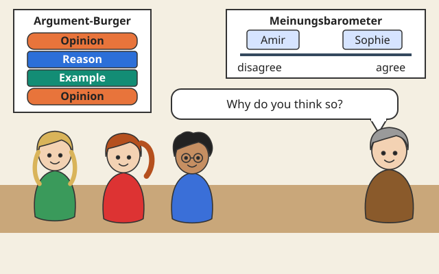

Meinung begründen: der Argument-Burger
Mit einem KI-Tutor lernen
Ein KI-Tutor erklärt dir diese Seite und hilft dir bei den Aufgaben. Wähl deinen Assistenten:
Mit Claude öffnen Mit ChatGPT öffnen Mit Mistral Vibe öffnen
Du nutzt dein eigenes Konto beim Anbieter. Der Assistent ist kein Angebot von lernapps.net: lernapps liefert nur Inhalte und Aufgaben. Die Wahl gilt für alle Seiten, nur auf diesem Gerät.
Mr Hill fragt Why?

© CC-BY-4.0An der Meinungswand: links das Poster Argument-Burger, rechts das Meinungsbarometer mit den Namenskärtchen. Von links: Sophie (Zöpfe), Ellie (roter Pferdeschwanz), Amir (Brille) und Mr Hill (graue Haare).
An der Meinungswand stellen die Kinder ihr Kärtchen auf agree oder disagree. Sophie sagt: „I think pizza is the best food.“ Mr Hill fragt: „Why do you think so?“ (Warum denkst du das?)
Aufgabe
Lösung
Dieselbe Meinung noch einmal
Das sagt nichts Neues.
Eine Begründung für ihre Meinung richtige Antwort
Mr Hill fragt nach dem Warum.
Eine Frage an Mr Hill
Mr Hill hat schon gefragt.
Ein Grund macht die Meinung stark.
Das kannst du danach: Du antwortest auf Why? mit einem Burger aus vier Sätzen.
Ein Chat über einen Filmabend
| Englisch | Deutsch |
|---|---|
| screen | Leinwand, Bildschirm |
| huge | riesig |
| amazing | toll, erstaunlich |
| expensive | teuer |
| pause | anhalten |
| agree, disagree | zustimmen, widersprechen |
| exciting | spannend |
| both sides | beide Seiten |
| reason | Grund |
| example | Beispiel |
| opinion | Meinung |
Ellie, Amir und Sophie wählen einen Film für Freitag. Achte darauf, wer einen Grund und wer ein Beispiel nennt und wo eine Schicht fehlt. Die Zahlen sind die Zeilen.
1 Ellie: Mr Hill says we can choose a film for Friday. Cinema or home?
2 Amir: Cinema, of course! I think the cinema is the best place for a film.
3 Sophie: Why do you think so?
4 Amir: Because the screen is huge. For example, in the last space film I saw a whole planet, and every detail looked amazing.
5 Ellie: I disagree. In my opinion, home is better.
6 Sophie: Why?
7 Ellie: The cinema is expensive, and you cannot pause the film. For example, last Sunday I made snacks at home, and I paused the film three times for pizza!
8 Sophie: I see both sides. I agree with Ellie, because it is cheaper at home. But Amir is right too, because the big screen is exciting.
9 Amir: So we need a third idea.
10 Ellie: A film night at school with a big screen!
11 Sophie: Good idea! That is why I like a big screen at school.
Vier Schichten halten eine Meinung
 © CC-BY-4.0
© CC-BY-4.0Der Argument-Burger auf dem Poster. Orange sind die beiden Brötchen (Meinung), blau ist der Grund, grün das Beispiel.
Merke
Eine Meinung braucht vier Schichten. Oben steht die Meinung (Opinion), zum Beispiel mit I think …. Dann kommt der Grund (Reason), meist mit because. Danach folgt ein Beispiel (Example), meist mit For example, …. Unten sagst du die Meinung noch einmal, zum Beispiel mit So … oder That is why …. Nach because steht ein ganzer Satz mit Verb. Der Grund hängt am Satz davor: I like it because …. Ein Beispiel erzählt oft, was passiert ist. Dann steht das Verb meist im simple past: I visited a museum. Manche Verben ändern sich ganz, zum Beispiel see zu saw.
Schichten finden, ordnen und schreiben
Aufgabe
Lösung
Das Kino ist billiger
Das sagt Sophie über zu Hause.
Man kann den Film anhalten
Das sagt Ellie über zu Hause.
Die Leinwand ist riesig richtige Antwort
Das sagt Amir in Zeile 4.
Amirs Grund steht nach because.
Aufgabe
Lösung
Zeile 2
Hier sagt Amir nur seine Meinung.
Zeile 4 richtige Antwort
Amir erzählt vom letzten Film im Kino: For example, …
Zeile 5
Hier sagt Ellie nur ihre Meinung.
Zeile 7 richtige Antwort
Ellie erzählt vom letzten Sonntag: For example, …
Ein Beispiel erzählt, was wirklich passiert ist.
Aufgabe
Lösung
Richtige Antwort: I think maths is easy. – Opinion oben; because the teacher explains it twice. – Reason; For example, I solved ten tasks in one hour. – Example; So maths is my favourite subject. – Opinion unten
Dazwischen liegen Grund und Beispiel.
Aufgabe
Lösung
Keine Schicht
Prüfe, ob zwischen Meinung und Beispiel eine Schicht fehlt.
Das Beispiel
Der Satz mit For example ist da.
Die Meinung unten
Der letzte Satz mit So ist die Meinung unten.
Der Grund richtige Antwort
Es fehlt ein Satz mit because.
Zuerst die Meinung, dann der Grund, dann das Beispiel.
Aufgabe
Lösung
Richtige Antwort: 1. I think dogs are better than cats., 2. They love to go for walks., 3. For example, a dog at the gate waits for me every morning., 4. So I prefer dogs.
Meinung, Grund, Beispiel, Meinung.
Aufgabe
Schreibe die Sätze auf Englisch. Satz 1: Ich denke, Lesen ist nützlich. Satz 2: Ich mag Züge, weil sie leise sind. Satz 3: Zum Beispiel lese ich jede Woche ein Buch. Die englischen Wörter sind nur eine Hilfe: Ergänze, was für einen ganzen Satz fehlt (Verb, Artikel).
- I · think · reading · useful
- I · like · trains · because · quiet
- for example · I · read · book · every week
Lösung
- I think that reading is useful. (auch richtig: I think reading is useful.)
- I like trains because they are quiet. (auch richtig: I like trains because they're quiet.)
- For example, I read a book every week.
Aufgabe
Hör zu und schreibe, was du hörst.
- KI
- KI
- KI
Lösung
- I like autumn because the trees are beautiful.
- For example, a friend of mine plays chess every evening.
- That is why I think reading is important.
Dein eigener Burger
Aufgabe
Hör zu, sprich nach und nimm dich auf. Vergleiche dann mit dem Original.
Tipp
Hör zu. Sprich dann langsam nach.
- What is your reason?KI
- Can you give me an example?KI
- I think this is a good idea.KI
Zum Aufnehmen braucht diese Aufgabe JavaScript. Die Beispiele kannst du auch ohne anhören.
Lösung
- What is your reason?
- Can you give me an example?
- I think this is a good idea.
Offene Aufgabe
Wähle ein Thema, zu dem du eine Meinung hast (zum Beispiel ein Essen, ein Hobby oder ein Fach). Schreibe in vier Sätzen deinen Argument-Burger: Meinung, Grund, Beispiel, Meinung.
Tipp
Die App bewertet nicht. Prüfe deinen Text anhand der Punkte.
Eine gute Antwort enthält:
- Der Text hat vier Teile in der richtigen Reihenfolge. Nachlesen
- Der Grund hängt mit because an der Meinung und ist ein ganzer Satz mit Verb. Nachlesen
- Das Beispiel ist etwas, das wirklich passiert ist, mit For example. Nachlesen
- Der letzte Satz sagt die Meinung noch einmal, zum Beispiel mit So oder That is why. (Form)
Lösung
I think homework is useful. It is useful because it helps me remember the lesson. For example, I learned ten new words last week by writing them in my homework. So I think a little homework every day is a good idea.
Wie es weitergeht
Auf den nächsten Seiten sprichst du über Musik, Sport, Fernsehen und soziale Medien.
Fehler gefunden oder eine Idee für diese App?